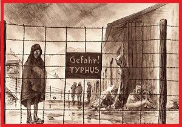
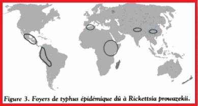

Typhus :Rickettsia prowazekii
1) Description:
Hôtes :
Les hôtes principaux de Rickettsia prowazekii sont l’homme, l'écureuils volants, le poux de corps et de tête. Aussi, certaines recherchent montrent la présence d'anticorps dirigés contre Rickettsia prowazekii chez des animaux d'élevage et des ânes.
Organes cibles :
Tous les organes sont touchés : cerveau, reins, cœur, muscles, foie, poumon.
Types de Symptômes :
Chez le sujet atteint par le typhus épidémique,durant 1 à 3 jours, des malaises, corrélés à l’apparition de céphalées intenses et d'une forte fièvre (40 ºC) se manifestent. Douleurs musculaires, arthralgie, douleurs abdominales, anorexie, frissons, tachypnée, diarrhée, myocardite, tachycardie sont aussi constatés. Dans certains cas, des éruptions cutanées érythémateuses peuvent apparaître au niveau des aisselles, et se propager sur le reste du corps (sauf visage, paume des mains et plante des pieds). De nombreux cas présentent des complications au niveau du système nerveux central (troubles psychiatriques, convulsions, coma, confusion, somnolence et perte auditive). Une toux est parfois présente ainsi qu'une gangrène et une nécrose des doigts et des orteils. La maladie dure environ deux semaines, mais le rétablissement complet peut prendre plusieurs mois.
Vecteur
Le typhus est une maladie vectorielle. En effet le pou de corps en est le principal vecteur via ses déjections.
Certaines recherches sembleraient suggérer que le pou de tête pourrait aussi être impliqué.
2) Distribution spatiale :
Epidémiologie :
La maladie est observée dans les régions caractérisées la pauvreté et un nombre élevé de sans-abri. La maladie pose un problème particulier en période de famine, de conflits ou lorsque surviennent des catastrophes naturelles, puisque les endroits surpeuplés et le manque d'hygiène facilitent la prolifération des poux de corps.Au cours des 25 dernières années, des cas ont été rapportés en Afrique (Éthiopie, Nigeria et Burundi), au Mexique, en Amérique centrale, en Amérique du Sud, en Europe de l'Est, en Afghanistan, dans le Nord de l'Inde, en Chine et aux États-Unis. Depuis 1976, 39 cas de typhus épidémique ont été rapportés aux États-Unis et au moins le tiers des cas étaient liés à un contact avec des écureuils volants. On estime le taux de létalité de cette maladie à 4 % si le patient est traité par les antibiotiques appropriés, mais la mortalité est plus élevée chez les personnes de plus de 60 ans. Une résurgence sous forme atténuée, appelée « maladie de Brill-Zinsser », peut se produire chez les patients qui ont déjà eu le typhus épidémique; cette forme atténuée est associée à un taux de létalité de 1 %.
Recommandations:
Lors de cas de suspicion de typhus, on ne doit pas attendre les résultats de la confirmation du laboratoire pour administrer l'antibiothérapie appropriée.En cas d'infestation de poux, il faut retirer les vêtements, les laver et ne pas les porter pendant 7 jours. Les insecticides (malathion ou perméthrine) doivent être utilisés sur le corps et les cheveux pour tuer les lentes, mais peuvent aussi être utilisés sur les vêtements.De plus, en cas de manipulations en laboratoire, des précautions particulières doivent être mises en œuvre : enceintes sécurisées, protections spécifiques.